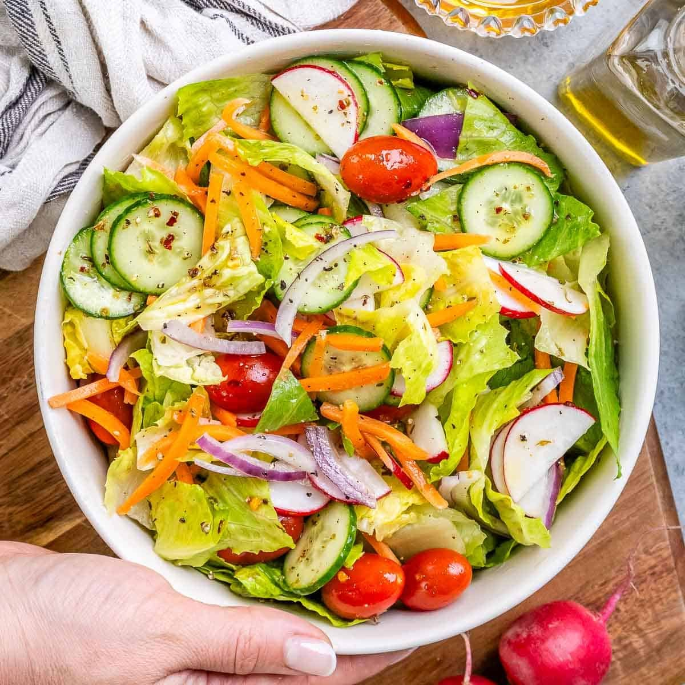

Preparation: 10 minutes · Cooking: 0 minutes · Serves: 2–4
Ingredients
- 2 cups fresh lettuce
- 2 tomatoes
- 1 cucumber
- 1 carrot
- 2 tablespoons olive oil
- 1 tablespoon lemon juice
- Salt and pepper
Instructions
- Wash all the vegetables.
- Chop the lettuce, tomatoes, and cucumber.
- Grate the carrot.
- Put all the vegetables in a bowl.
- Add olive oil, lemon juice, salt, and pepper.
- Mix everything well and serve fresh!
A healthy and refreshing salad made with fresh vegetables.